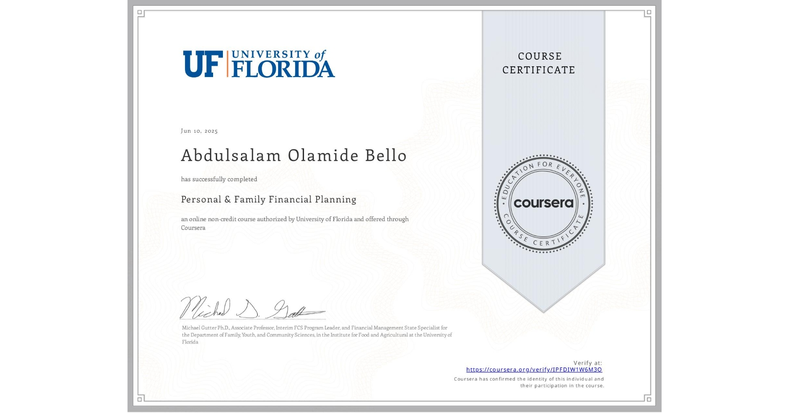
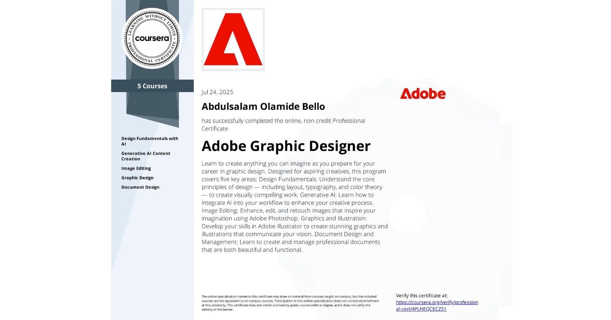
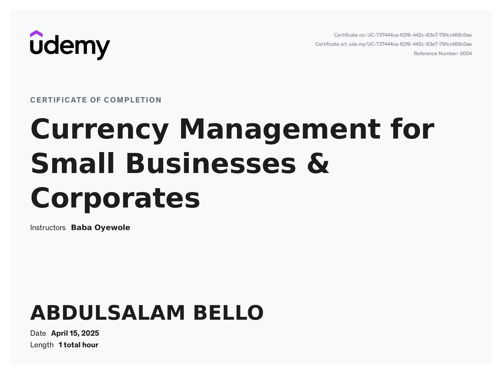
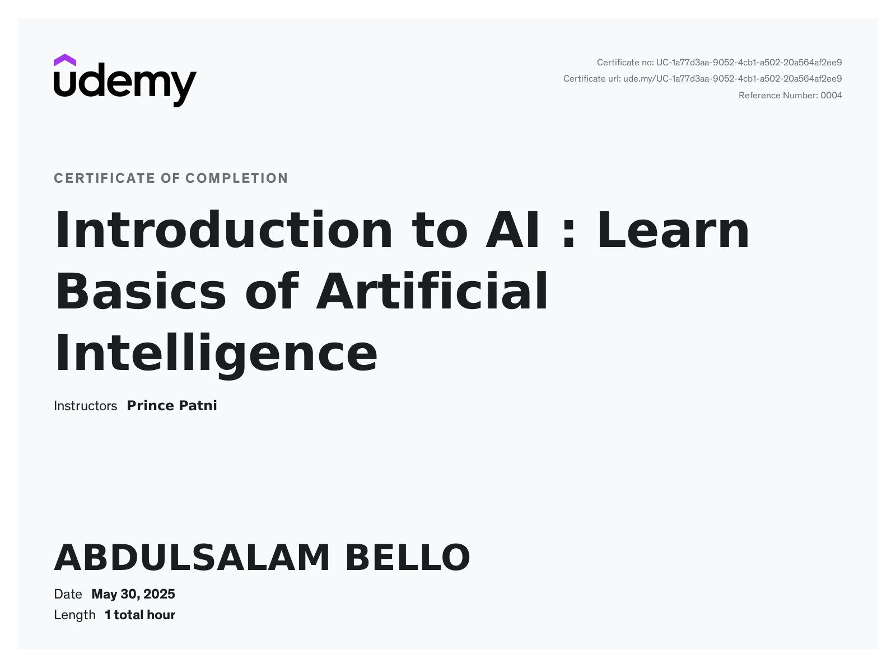

Certifications during the Training Period






Froensic Webinar Cert.
Everything that has a beginning will surely have an end and now I truly believe that, as my six-month training has finally come to a close. Was it good or bad? Well, stay tuned for the answer.
Eight months ago, I was anxious about reaching this stage of my undergraduate journey. But since there was no escaping it, I chose to face reality head-on. I dedicated time and thought to selecting the best possible placement for my industrial training, refusing to simply follow friends even though they also made great choices. My decision-making process considered several factors including the intensity of work, transportation and feeding costs, availability, and time efficiency, among other personal reasons.
At first, the training felt boring, mainly because of the “Nigerian factor” that affected the hospital's service delivery. However, after some time, the real training began under the strict regulations of the medical college. I started the journey alone until my institutional mate, Mariam, resumed. We quickly adapted to the training routine, which was similar to what we experienced in school though a bit stricter, we managed well. As time went on, undergraduates from LAUTECH and GASUA Universities joined us. Initially, this made things a bit challenging for me since it was my first experience outside the university campus. I then reflected on the true purpose of this training to expose us to the industrial world and help us build professional relationships. With that mindset, I decided to make the most of it and create lasting memories. I began making friends selectively, but as the training progressed and our number reduced due to the intensity of the program I eventually became friends with everyone who stayed committed. Should I start naming? No, so as not to take much of your time but I can say all of them are awesome in their respective personalities. I am indeed amazed see different personalities working together. Though, there exists some misunderstanding but we all behave matured, I give 9/10 grade for that, sincerely. I am always gentle but also very active thanks to the Almighty God. During my training, I had the privilege of working closely with the golden laboratory scientist, Miss Alamu, who taught us various laboratory tests, research analysis procedures, and the importance of maintaining laboratory cleanliness. I was also trained by the great Dr. Sam, a man of wisdom who constantly gave us valuable advice and moral guidance. He did everything within his ability to shape us into great scholars. My sincere appreciation also goes to the Honorable Head of Department (HOD), who selflessly sacrificed her time to train us. She was strict about discipline and could not tolerate laziness. The respected former HOD was another great influence he continuously encouraged us to seek more knowledge and emphasized the power of the internet in learning. “Don’t waste your precious time,” he always advised. And to the great consultant and medical lecturer, I owe special gratitude. He truly made me a skilled IBM SPSS data analyst. Through his teaching, I realized that physical and traditional learning often surpasses online learning. How did I confirm this? I had previously attended two online IBM SPSS courses worth about ₦30,000, yet after receiving direct training from Dr. Akande, I was deeply impressed. I revisited those online courses and asked myself, what had those online tutors really taught us? All those who trained me during my industrial training were truly exceptional. May the Almighty God continue to bless them abundantly and enrich them in both wealth and knowledge.
To be honest, I gained far more than I expected in many areas, although I fell short in a few others. On the positive side, I successfully acquired the technical skills that were expected of us during the training, especially from a medical and laboratory perspective. Where I fell a little short was in the theoretical aspect, which motivated me to seek out forensic webinars and online programs and thankfully, I found several that were both educational and inspiring. In terms of digital skills, I can only say it was by the Grace of the Almighty. During the training, I met a wonderful lady named Ilori Precious, who introduced me to a scholarship program sponsored by MTN. Coincidentally, it was hosted on one of my favorite learning platforms, Coursera. Through that program, I completed over twenty projects and earned a professional certification, and I am currently pursuing additional professional courses. I made the most of this opportunity because I had previously missed a similar one on Coursera a mistake that taught me to always maximize every chance to learn. I also explored other platforms such as Udemy, where I gained valuable knowledge during my training period. Overall, I can confidently say with all glory to the Almighty that I gained immensely from this experience.
Before leaving campus for this program, and especially after completing it, my perspective on life completely changed. I learned that cost efficiency knowing when and how to spend wisely is a key to a sustainable and fulfilling life. I also came face to face with the reality of Nigeria's leadership challenges, which made me deeply reflect on how I can contribute to making the country better. I now understand that helping Nigeria isn’t only about providing financial support, but also about demonstrating good character, discipline, and integrity in everyday actions. Although it's not an easy task, I genuinely believe in a better Nigeria, and I am determined to be part of that positive change.
Hmm, what a thoughtful theme, and indeed, looking back, I realize I made some mistakes during my journey. Some of which include:
I termed it future for now because any of my perspective can change for the better as my exposure get increased. I have observed that many undergraduates in Nigeria lack clear future plans, which often affects their employability. With this realization and the advice, I have received from mentors, I have decided to clearly define my path, simply as follow;
I sincerely appreciate my IT supervisors, my IT mates (most especially Precious who showed me the MTN way), my neighbours who sponsored some of my virtual trainings and those who make my transportation to the IT venue very easy, and specially to my family, who no one can replace in my life. I pray to Almighty God to grant you all long life in more wealth, happiness and good health. Thank You All